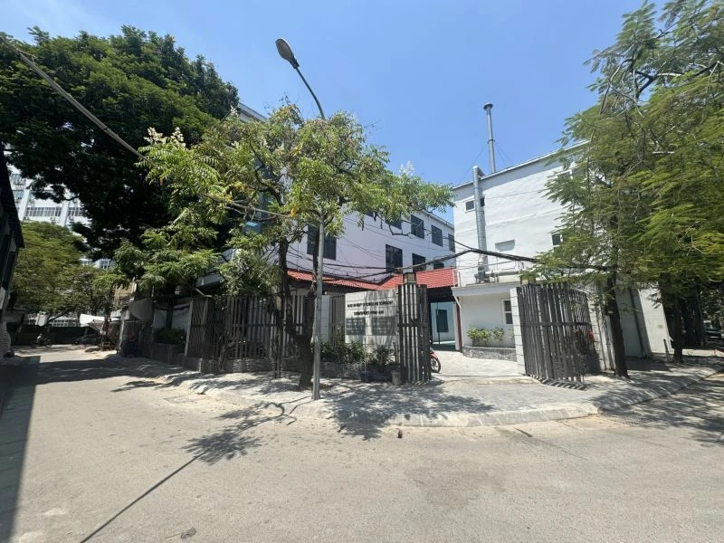
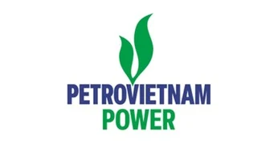
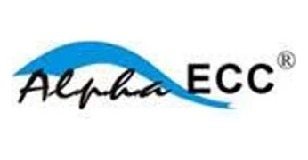
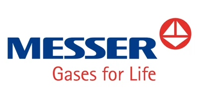
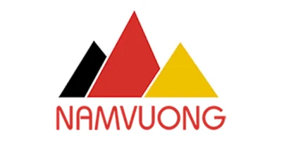
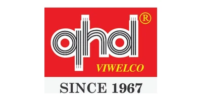

Quá trình hàn và ghép nối
Nghiên cứu nguồn nhiệt, tương tác vật liệu và thông số công nghệ trong hàn nóng chảy, hàn ma sát khuấy và các quá trình ghép nối.
LASER FSW ARC WELDINGJWRI HUST-UOsaka kết nối nghiên cứu, đào tạo và ứng dụng công nghiệp trong công nghệ hàn, ghép nối và vật liệu — trên nền tảng hợp tác giữa Đại học Bách khoa Hà Nội và Đại học Osaka.

Kết hợp khoa học vật liệu với công nghệ chế tạo để giải quyết những bài toán thực tiễn của nghiên cứu và sản xuất.
Nghiên cứu nguồn nhiệt, tương tác vật liệu và thông số công nghệ trong hàn nóng chảy, hàn ma sát khuấy và các quá trình ghép nối.
LASER FSW ARC WELDINGPhân tích mối quan hệ giữa quá trình chế tạo, tổ chức tế vi và tính chất của vật liệu, mối hàn và liên kết khác loại.
SEM / EDS EBSD METALLURGYKết hợp thực nghiệm, mô phỏng và phân tích dữ liệu để hiểu cơ chế, đánh giá chất lượng và tối ưu hóa quá trình công nghệ.
SIMULATION DATA ANALYSIS OPTIMIZATIONTrao đổi với nhóm chuyên môn để lựa chọn phương pháp phân tích, chuẩn bị mẫu và xác định phạm vi công việc phù hợp.
Một số thiết bị tiêu biểu phục vụ nghiên cứu công nghệ hàn và phân tích vật liệu tại JWRI HUST-UOsaka.
TRƯỜNG CƠ KHÍ - ĐẠI HỌC BÁCH KHOA HÀ NỘI ĐẠI HỌC OSAKA (NHẬT BẢN) HỒ SƠ NĂNG LỰC VÀ GIỚI THIỆU TỔ CHỨC TRUNG TÂM NGHIÊN CỨU CÔNG NGHỆ HÀN VÀ GHÉP NỐI (JOINING AND WELDING RESEARCH INSTITUTE - JWRI HUST-UOsaka) I. TỔNG QUAN VÀ TẦM …
Đọc chi tiết ↗Trung tâm Nghiên cứu Công nghệ Hàn và Ghép nối (JWRI HUST-UOsaka) được định hướng xây dựng theo mô hình hệ sinh thái nghiên cứu và đào tạo tinh gọn, chuyên sâu với 03 phòng thí nghiệm (Lab) chuyên ngành . Dưới đây là thông tin giớ…
Đọc chi tiết ↗TRUNG TÂM NGHIÊN CỨU CÔNG NGHỆ HÀN VÀ GHÉP NỐI (JWRI HUST-UOsaka) Đào Tạo Nhân Lực Chất Lượng Cao Từ Đại Học Đến Sau Đại Học & Cấp Chứng Chỉ Hàn Quốc Tế Là đơn vị chuyên môn liên ngành trực thuộc Trường Cơ khí – Đại học Bách khoa …
Đọc chi tiết ↗BÀI GIỚI THIỆU VÀ THỐNG KÊ CÔNG BỐ KHOA HỌC TRUNG TÂM NGHIÊN CỨU CÔNG NGHỆ HÀN VÀ GHÉP NỐI (JWRI HUST-UOsaka) I. GIỚI THIỆU CHUNG VỀ NĂNG LỰC NGHIÊN CỨU KHOA HỌC Trung tâm Nghiên cứu Công nghệ Hàn và Ghép nối (JWRI HUST-UOsaka) là…
Đọc chi tiết ↗Khi nhắc đến "Hàn", bạn hình dung ra điều gì? Những tia lửa chói lòa hay người thợ lấm lem trong các xưởng cơ khí truyền thống? Đã đến lúc phải thay đổi hoàn toàn góc nhìn đó! Trong Kỷ nguyên Công nghiệp 4.0, Công nghệ & Kỹ thuật …
Đọc chi tiết ↗Nhật Bản luôn được biết đến là cường quốc hàng đầu thế giới về công nghệ cơ khí và vật liệu. Bạn có muốn trực tiếp trải nghiệm môi trường học thuật đỉnh cao hay nắm chắc trong tay cơ hội làm việc tại xứ sở hoa anh đào ngay từ khi …
Đọc chi tiết ↗Tiếp nối những thành công rực rỡ từ những tháng đầu năm, bước sang Quý 2/2026, Trung tâm Nghiên cứu Công nghệ hàn & Ghép nối JWRI HUST-UOsaka tiếp tục duy trì nhịp độ làm việc sôi nổi, ghi dấu ấn mạnh mẽ trên cả ba trụ cột: Nâng t…
Đọc chi tiết ↗Những tháng đầu năm 2026 đã ghi dấu một khởi đầu rực rỡ và đầy năng lượng tại Trung tâm Nghiên cứu Công nghệ Hàn & Ghép nối (JWRI HUST-UOsaka). Từ các hoạt động tổng kết, định hướng chiến lược, gắn kết nội bộ, nâng cao chất lượng …
Đọc chi tiết ↗




Gửi yêu cầu nghiên cứu, thử nghiệm hoặc đào tạo. Nhóm chuyên môn sẽ trao đổi về phương án và phạm vi thực hiện.